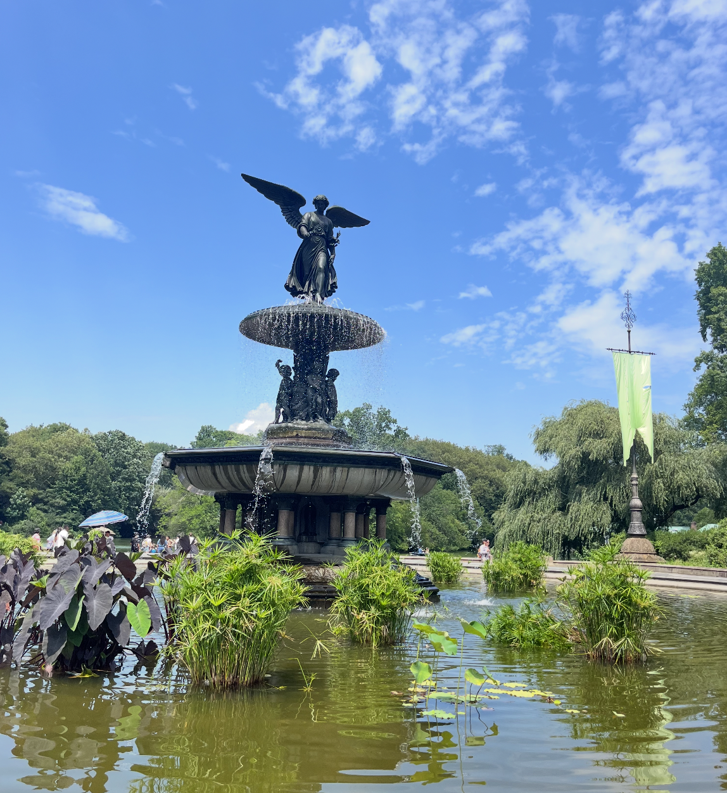
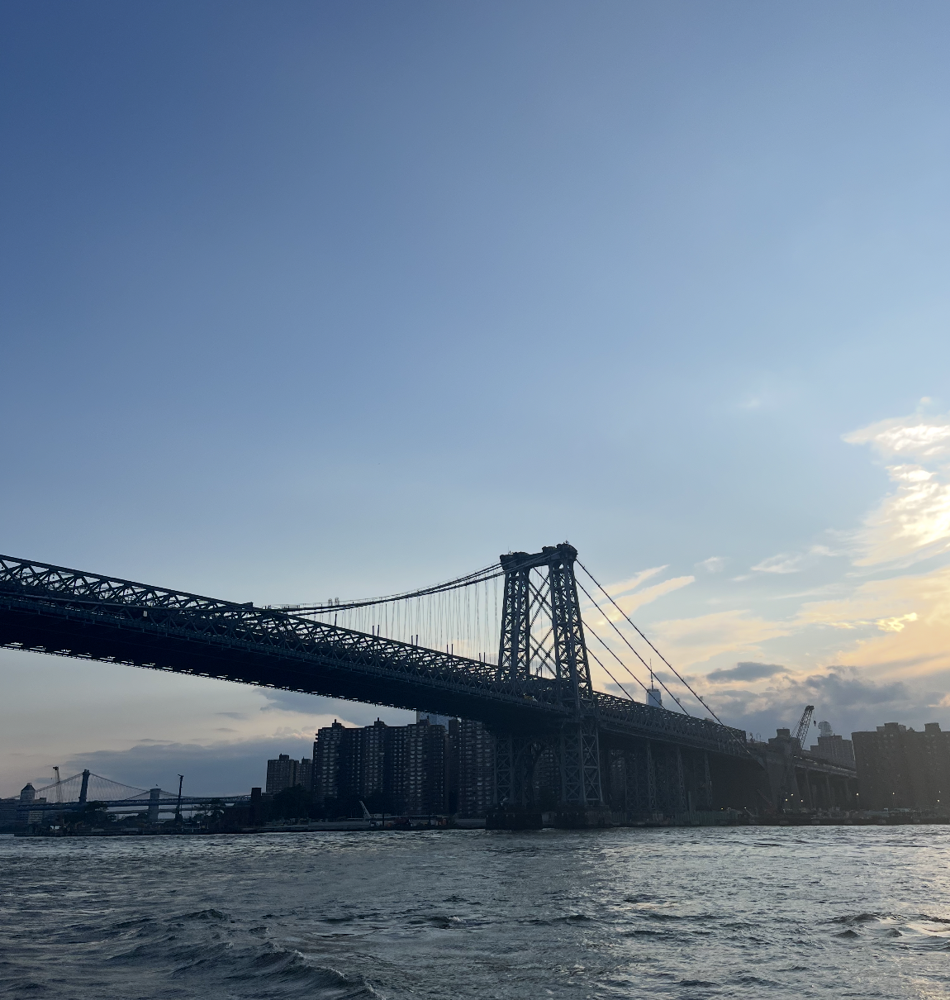
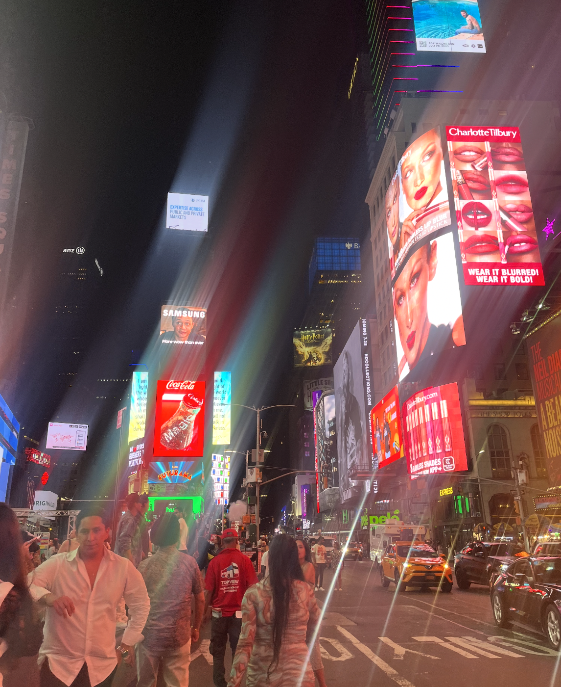

NEW YORK
published June 2024



I loved my trip to New York. I enjoyed trying their bagels, spending time at Time Square, touring Central Park, and seeing the Statue of Liberty! I hope to live in New York one day.
Back to Blog